【美景】
奥地利
它是神圣罗马帝国的主要组成部分和行政中心。早在19世纪奥地利建立了自己的帝国，奥普战争后和匈牙利妥协，并建立了双重君主制。
具体行程：
DAY1：布达佩斯-萨尔茨堡
入住地点：萨尔茨堡
萨尔茨堡名字的意思是“盐城堡”，位于奥地利的西部，是萨尔茨堡州的省会，是继维也纳、格拉茨和林茨之后的奥地利第四大城市，人口为156,872。它是阿尔卑斯山脉的门庭，城市的建筑风格以巴洛克为主，城市的历史相当悠久，据史料记载，萨尔茨堡是现今奥地利管辖地域内历史最悠久的城市。 该镇位于前罗马定居点的遗址上。它的主要收入来源是盐提取和交易，黄金开采。要塞萨尔茨堡是欧洲最大的中世纪城堡之一 ，以其巴洛克式建筑而闻名，是阿尔卑斯山以北保存最完好的城市之一，拥有27座教堂。1996年被联合国教科文组织列为世界遗产。
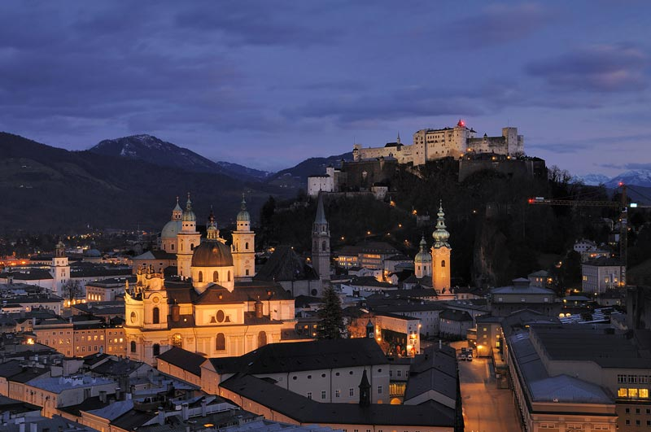 萨尔茨堡是18世纪作曲家沃尔夫冈•阿马德乌斯•莫扎特的发源地。由于其历史，文化和吸引力，萨尔茨堡被誉为奥地利“最具启发性的城市”。人类居住的痕迹可追溯到新石器时代的凯尔特人。 霍恩萨尔斯堡要塞，这座城市的堡垒，由盖布哈德大主教于1077年建造。 萨尔茨堡是音乐天才莫扎特的出生地，莫扎特不到36年的短暂生命中超过一半的岁月是在萨尔茨堡度过的。萨尔茨堡也是指挥家赫伯特•冯•卡拉扬的故乡，电影《音乐之声》的拍摄地。萨尔茨堡老城在1996年被联合国教科文组织列入世界遗产名录。
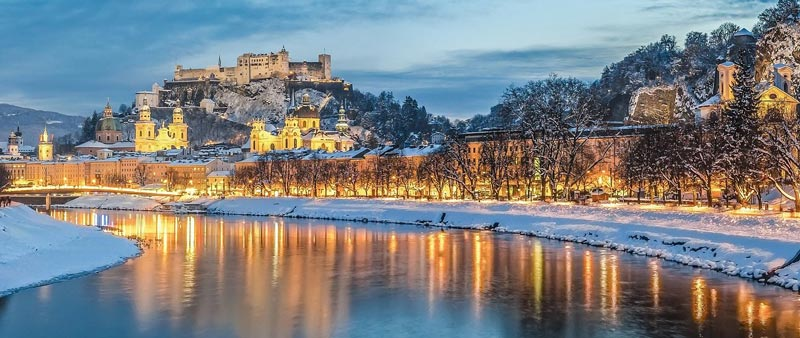
景点：萨尔茨堡城堡
萨尔茨堡城堡是具有里程碑意义的。它位于萨尔茨堡市上方的一座城市山上，本笃会女修道院坐落在堡垒东面的正下方。萨尔斯堡是欧洲最大的城堡之一，也是中欧最大的保存完好的城堡，建筑面积超过7,000平方米（包括堡垒超过14,000平方米），是欧洲最大的城堡建筑群，其历史可以追溯到11世纪。 1077年，吉布哈德（1010-1088）开始建造一栋居民楼-至今仍是高层的核心-一栋小教堂和一栋带有相关墙环的小住宅楼。12-14世纪，外部设防圈的建造，k在很大程度上决定了城堡的现有范围。 15世纪城堡进行了加固扩建和防御工事及军械库的修建。战争威胁不断增加的时期，城堡的实力明显可见。霍恩萨尔茨堡要塞上仍然存在的最古老的徽章石头。世界上保存最久的缆车和世界上最古老的风琴厂都在这里。 1525年，农民和矿工起义，这场争执对萨尔斯堡要塞是900年的历史中最大的挑战，然而，这座堡垒仍然坚不可摧。 拿破仑战争期间，这座城市没有施加任何抵抗移交给了法国人。因此，这座城堡保留了下来。 1861年，弗朗茨•约瑟夫一世放弃了萨尔斯堡要塞，将其用作军营。 1892年，修建了通往的堡垒铁路。迈克尔•海顿的故居在那儿建立了他的纪念碑。这座城堡以前由大主教王子所有，现在是奥地利的国有财产。作为萨尔茨堡市的地标，它主要用于旅游业。 2016年，奥地利附近萨尔茨堡诞辰200周年之际，联邦政府将这座堡垒捐赠给了萨尔茨堡州。 得益于其良好的条件和地理位置，萨尔斯堡要塞是一个吸引群众的地方。除了巡回演出外，还会定期举行音乐会，教堂也可用于举办教堂婚礼或某些特定的公共假期。在堡垒上还有萨尔茨堡木偶博物馆及木偶剧院的历史收藏，另外还有库克步兵团博物馆大公爵雷纳团。萨尔茨堡国际夏季美术学院也提供课程。 景点：萨尔茨堡大教堂 萨尔茨堡大教堂是罗马天主教萨尔茨堡大主教管区，是联合国教科文组织世界遗产。 罗马式的第一个大教堂是三走廊大教堂，前面是天堂，还有洗礼池。建成于774年。1167年4月4日至5日晚上，大教堂被弗里德里希•巴巴罗萨皇帝的代表纵火烧毁。因为萨尔茨堡大主教康拉德二世•冯•巴本贝格不承认皇帝任命的反教皇维克多四世。在康拉德三世主教的领导下，建造了更为宏伟的三通道小教堂。当时它是阿尔卑斯山以北最大的大教堂。 1606年，旧大教堂进行了彻底的拆除。1614年，新大楼奠基。1628年，大教堂由巴黎大主教巴黎•冯•罗德隆王子奉献。为期八天的大教堂奉献节是萨尔茨堡市有史以来最大的历史性节日。 大教堂的主殿长：101米，主教堂中殿宽度：45米，主殿高度：32米，穿越圆顶高度：79米，塔高：81米，11个祭坛，可容纳10,000人的客厅。 景点：米拉贝尔宫 今天的米拉贝尔宫位于萨尔茨堡的新城区，由大主教沃尔夫•迪特里希•冯•莱特瑙在大城墙外于1606年为爱人秘密妻子萨洛姆•阿尔特建造，最初被称为阿尔特瑙城堡。 米拉贝尔宫的花园带有附属建筑和园艺古迹，整个建筑群均受到古迹保护，是联合国教科文组织世界遗产的一部分。 对于他的15个孩子，王子被皇帝合法化为合法继承人，对于孩子和亲人，也被提升为世袭贵族。1612年，沃尔夫•迪特里希在萨尔斯堡要塞单独监禁后，为了完全抹杀记忆，马库斯•斯蒂库斯将宫殿命名为米拉贝尔。
1721年到1727年，著名的巴洛克建筑大师约翰•卢卡斯•冯•希尔德布兰特代表大主教弗朗兹•安东•冯•哈拉赫，将其改造成一个宏伟的巴洛克式宫殿建筑群。这是一个四翼建筑群，带有内部庭院。1818年，一场毁灭性大火造成了严重破坏。重建工作是由弗朗兹一世皇帝进行。其结果使该建筑失去了许多独特的巴洛克外观。幸运的是，西边的庭院外墙和西边的花园外墙都得到了保留。三维凸出的节奏和结构合理的墙壁表面的节奏传达了巴洛克杰作的原始外观的想法。
DAY2：萨尔茨堡-瑟尔登
入住地点：瑟尔登
体验詹姆斯·邦德007摄影取景地，世界杯滑雪比赛场地，这里有梦幻般的冰川雪场，畅享150公里滑雪赛道！
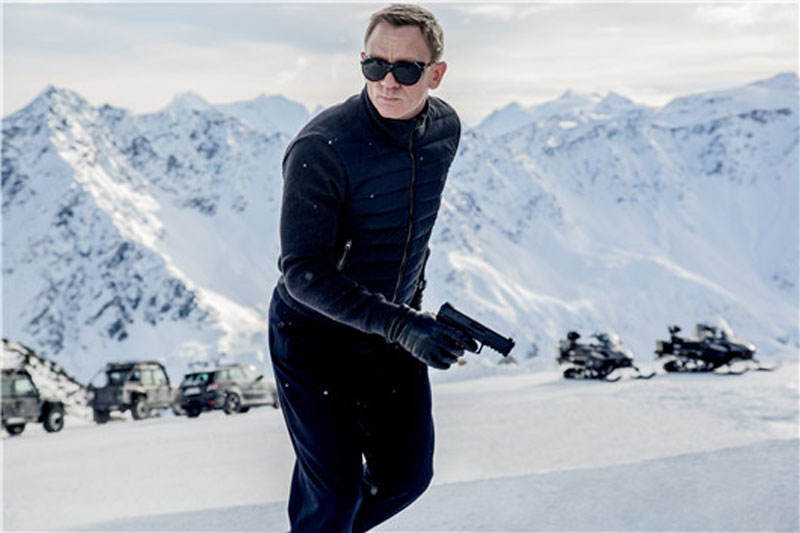
滑雪自由行一日
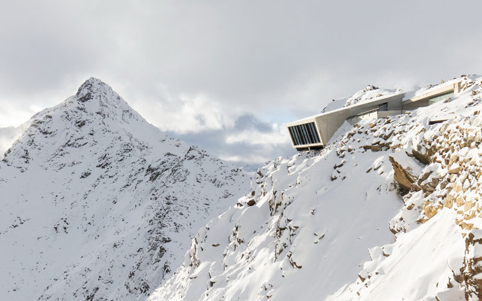
入住同一地点
雪场概况： 瑟尔登雪场是奥地利海拔落差最大的滑雪场，垂直落差达到了1873m，其中包括2个冰川场地Tiefenbach和Rettenbach。雪道长度150km (包括蓝道 69.5km, 红道 44.9km, 黑道 29.2km）, 共有缆车33辆。这些完备的设施使得瑟尔登雪场成为了极具特色的冬季运动中心。瑟尔登雪场是每年阿尔卑斯山滑雪世界杯开赛举办地、国际滑雪锦标赛小回转的固定比赛场地、美国国家队训练基地，是欧洲最具有声誉的双板和单板滑雪场之一。 雪场细节： 在瑟尔登，无论什么水平的滑雪者都可以找到适合他们的场地。你可以看到3岁的宝宝们在雪场里滑雪幼儿园里学习滑雪；也可以看到高水平滑雪爱好者享受这冰川雪场带给他们的刺激和乐趣；还可以看到专业运动员在雪场认真的训练。在滑雪之中或之后，可以停留在山中的咖啡小馆喝杯咖啡，享受阿尔卑斯山的阳光，也可以和其他的滑雪爱好者喝杯啤酒，每天下午4点以后的整个瑟尔登更像是世界滑雪爱好者的party，热闹之极。 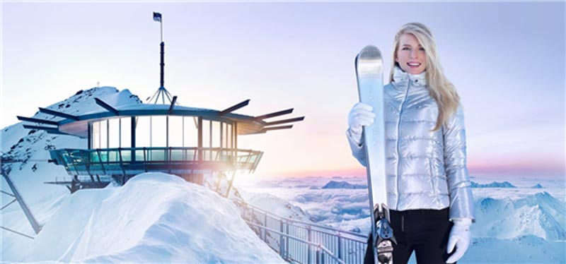 雪场周边： 瑟尔登的闻名在与它独特的雪上风景、以及滑雪区30多家提供夜宿的林中小屋，最受欢迎的是充满奥茨传统风格的小屋，在此还可以品尝到蒂罗尔地区的特产——各种口味的粉糖，亦或者是可提前预定的四人小聚；最棒的还是在Gaislachkogl山顶观景平台（天气允许）上享受蒂罗尔式的早餐和小吃。
DAY4：瑟尔登（滑雪场）
入住地点：霍赫卡尔
因斯布鲁克
蒂罗尔奥地利西部，名字的意思是“客栈上的桥”。大城市的地标是黄金屋顶。 因斯布鲁克拥有131,961名居民，是蒂罗尔州人口最多的城市，也是奥地利第五大城市（仅次于维也纳，格拉茨，林茨和萨尔茨堡）。大都市地区约有30万人居住。因斯布鲁克是国际知名的冬季运动中心；多次冬季奥运会在此举行。 石器时代初期曾有人居住且人口稠密。公元4世纪，罗马人在此建立了军队，以保护 重要的商业道路。 1180年安德希伯爵收购了该镇。1248年，该镇移交给蒂罗尔伯爵。因斯布鲁克是欧洲北部和南部之间的主要运输和通讯链接，路线也是最简单的穿越阿尔卑斯山的路线。它是国王特别保护下的中世纪帝国道路。在这条路线上作为中转站而产生的收入使这座城市得以蓬勃发展。1943年至1945年之间，因斯布鲁克经历了22次空袭，并遭受了严重破坏。
1996年，欧洲联盟承认欧洲地区蒂罗尔-南蒂罗尔-特伦蒂诺的成立，从而批准了奥地利蒂罗尔省与意大利南蒂罗尔和特伦蒂诺自治省之间的进一步文化和经济融合。 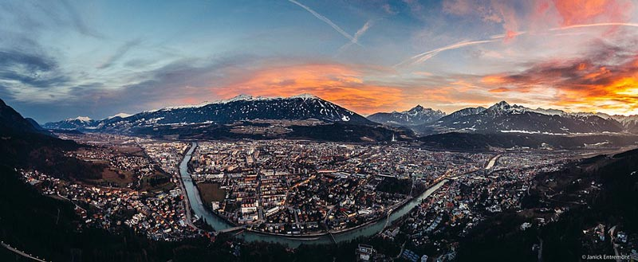
景点：黄金屋顶
黄金屋顶是一个晚期哥特式的辉煌飘窗在赫尔佐格-弗里德里希大街的因斯布鲁克老城区，被认为是一个具有里程碑意义的城市。凸窗的屋顶上覆盖着2657块镀金的铜瓦。 该建筑建于1420年，是蒂罗尔君主的住所。在世纪之交（1500年）之际，尼古拉斯•图灵长老在1497年– 1500年，代表德国国王和后来的马克西米利安一世皇帝添加了宏伟的海湾。 1536年2月25日，斐迪南国王下令将雅各胡特尔，这个奥地利重浸派领袖与殉道者，胡特尔派的创始人，放在金屋顶前的广场的木桩上活活烧死。 1996年，在大楼中建立了马克西米利安博物馆。 2003年以来，《高山公约》常设秘书处一直位于同一建筑物内。 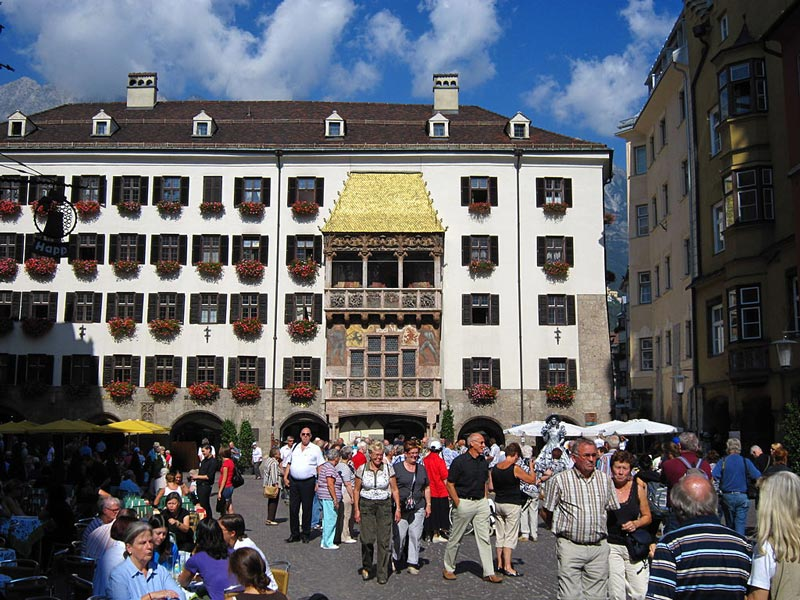 景点：海尔布陵屋 海尔布陵屋在因斯布鲁克的旧城区，是著名的巴洛克式的粉刷墙。 15世纪的联排别墅是由约翰•菲舍尔于1725年收购的，原来的哥特式在此时获得了它华丽的巴洛克式的粉刷。凸窗最初配有晚期哥特式装饰。这座房屋以塞巴斯蒂安•海尔布陵的名字命名，他在1800年至1827年间拥有此屋。 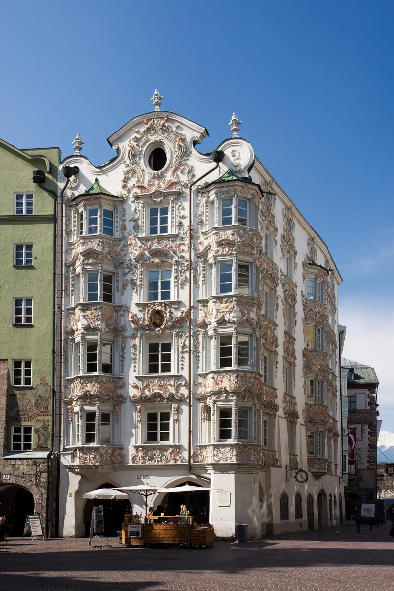 景点：因斯布鲁克大教堂 因斯布鲁克大教堂又称圣詹姆斯大教堂，是因斯布鲁克市天主教主教管区，巴洛克式大教堂，建于1717年，建在一座十二世纪的罗马式教堂的所在地。内部是由三个圆顶金库跨越封闭殿，和具有圆顶灯笼的圣坛。凭借其豪华的巴洛克式内饰，被认为是蒂罗尔州最重要的巴洛克式建筑之一。 因斯布鲁克大教堂以两个重要的宝藏著称。玛利亚希尔夫画在主祭坛上方，被认为是基督教世界中最受尊敬的玛丽安肖像之一。 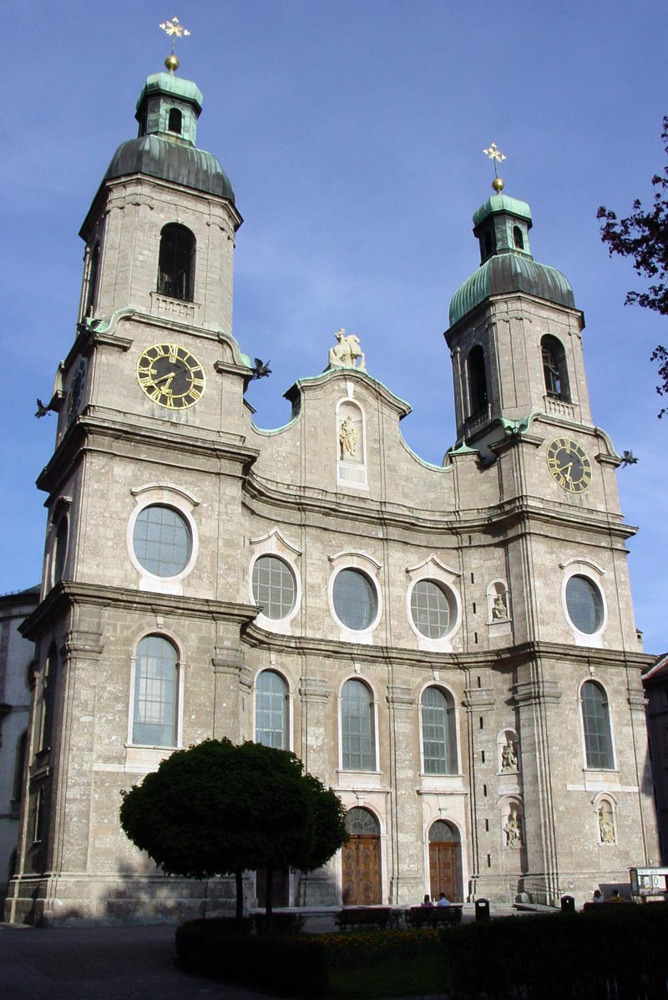
DAY6：霍赫卡尔-布达佩斯
返回布达佩斯
海拔在1,300至1,800米之间，适合从初学者到休闲滑雪者再到滑雪专业人士，滑雪区的特点是19公里的滑雪道，七个难度各异的升降机和斜坡。
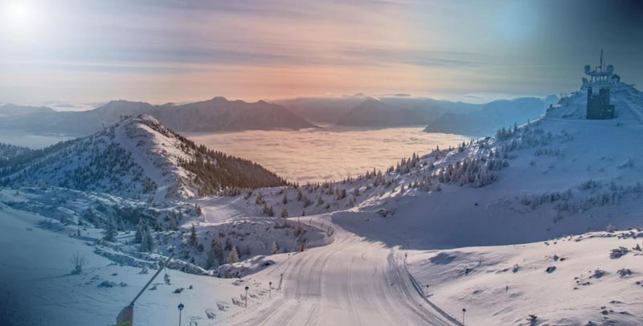 蓝道5.5公里，红道10公里，黑道3.5公里 海拔：1,300至1,800米 阳光明媚的山坡和乡村小屋 7部升降机（6部升降椅，1部升降椅） 儿童区的2条传送带
霍赫卡尔滑雪场的门票价格一般比瑟尔登滑雪场的门票价格低10%左右。
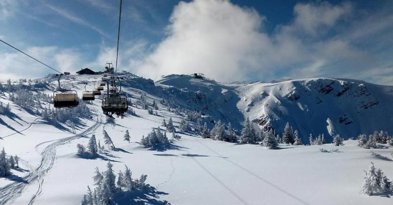
滑雪准备和注意事项
可以在滑雪场租滑雪板，滑雪鞋，头盔和滑雪杖。因为雪山上紫外线强、气温低，请务必注意： 1、滑雪是一项高消耗的运动，在进行滑雪运动前请补充好所需热量，随身携带一些高热量零食； 2、请随身携带护照、居留（在有效期）或身份证等合法证件，准备少量现金或银行卡支付门票、购餐等费用； 3、进行滑雪运动时一定要戴手套，最好戴专业滑雪手套，尽量不戴外表为棉、毛制手套，避免划伤和冻伤；保暖防护设备自行准备，包含：手套、帽子、围脖、滑雪袜、消毒酒精、口罩、防晒霜、个人药品。 4、请随身携带滑雪镜或太阳镜。视力不好的滑雪者，不要戴隐形眼镜和金属边框眼镜滑雪，尽量配戴树酯制造的眼镜，在进行滑雪运动时尽量配戴专业滑雪镜，避免雪盲； 5、雪山上温度一般比城市温度低2-5摄氏度，请务必内穿秋裤保暖。滑雪当天不要穿连裤袜等不具有保暖功能的衣服； 6、有轻微防水功能的外套和长裤：外套不易过长，以免影响运动；滑雪过程中积雪可能会把裤子弄湿，裤子若不防水，可携带牛仔裤替换，以防感冒； 7、滑雪当日，当无法有效地控制速度和平衡时，应主动向侧后方摔倒； 8、建议携带双肩背包，这样可以在滑雪时随身携带鞋子和其它个人物品，减少放在租赁店遗失的可能； 9、滑雪期间午餐请大家自理，滑雪场一般均设有餐厅。
Soelden the most buzzing winter destinations in the Alps offering fantastic glacier skiing. It'd be a shame to miss the setting that was used in the 2015 James Bond film, Spectre!
时间
地点
景点（可以 +/- ）
入住地点
第一天
布达佩斯出发
545公里
萨尔茨堡
Salzburg
萨尔茨堡简单城市游览： 萨尔茨堡要塞, 海尔布伦宫, 萨尔斯堡大教堂
第二天
271公里
瑟尔登
Soelden
007 Elements (电影）, AREA 47 - Tirol, Rotkogel, 滑雪
第三天
滑雪
第四天
第五天
88公里
400公里
Innsbruck
霍赫卡尔
Hochkar
因斯布鲁克: 黄金屋顶, 宫廷花园, 海尔布陵屋, Ambras Castle, 宫廷教堂
Hochkar: 滑雪半天
（如全团同意，则可以转换为全天滑雪或全天城市游览）
第六天
423公里到布达佩斯
滑雪半天
-